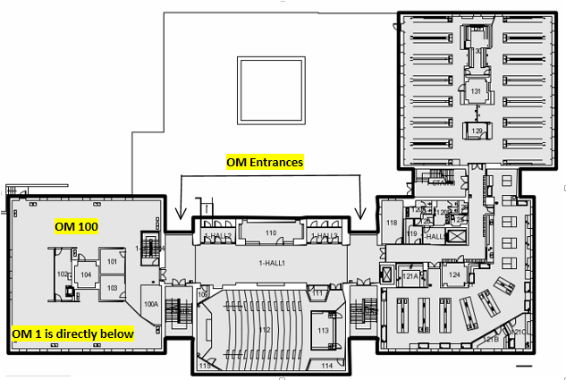
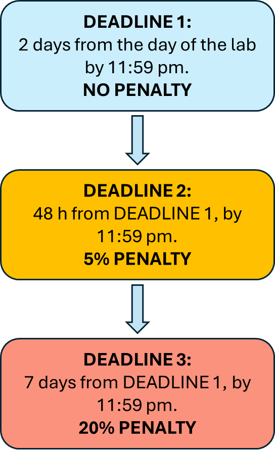

CHEMISTRY 120/122 - General Chemistry II Labs
Winter 2025
Lab Course Syllabus
Table of Contents
The laboratory is located in Otto Maass Lab 1. This lab is on the basement level of the Otto Maass building.

Term and year: Winter 2025
Course pre-requisite(s)/ co-requisite(s): High school level chemistry, mathematics and physics; CHEM -110 is not a prerequisite.
Course schedule (class day(s) and time): Winter 2025-CHEM-120-003-004-005-006-007-008-009-010-011/CHEM-122-001/002
Number of credits: 20% of the CHEM-120 course total
Course Instructor: Dr. Irina Denisova
Email: irina.denisova@mcgill.ca
Office location: Otto Mass Chemistry Building, General Chemistry Labs, office 002
Office hours: By appointment.
How to contact: Please, contact me via email to schedule an appointment for any questions about the labs. I am also available during the lab sessions for a consultation.
Course Coordinator: Mr. Badawy Shaath
E-mail: badawy.shaath@mcgill.ca
Office location: Otto Mass Chemistry Building, General Chemistry Labs, office 001
How to contact: Please, contact me via email to schedule a make-up lab.
The CHEM-120/122 Lab course offers a practical application of the theoretical principles learnt during the lectures and introduces basic chemistry laboratory techniques and procedures.
Important Information to keep in mind:
Laboratory experiments in this course are designed for students to achieve the following learning objectives. By the end of this course, students will:
The Winter 2025 CHEM-120/122 labs consist of 5 experimental and 1 theoretical lab that you will perform in McGill undergraduate general chemistry laboratory facility during the lab timeslot you signed up for on Minerva.
Bellow is a list of the experiments for the Winter 2025 term. A detailed schedule can be found under the CHEM-120/122 schedule tab just below the Syllabus tab.
|
Experiment |
Description |
Dates |
|
Gas Laws |
You will be applying Gas Laws to determine the amount of CaCO3 (w/w%) in an antacid tablet |
Jan 13 - Jan 24 |
|
Kinetics |
You will preform a hydrolysis reaction of Crystal Violet dye with NaOH under varied conditions to determine the reaction rate law |
Jan 27 - Feb 7 |
|
Problem Based Learning 1 (PBL 1) |
This is an open ended project where you will choose a chemistry problem that interests you among the several options provided and work on a solution |
Feb 10 - Feb 14 |
|
Titration/Precision and Accuracy |
You will perform multiple titrations to determine the concentration of NaOH solution and apply statistical analysis to your results |
Feb 17 - Feb 28 |
|
Acid - Base Equilibrium |
You will study an acid-base equilibrium of the bromothymol blue and will determine its equilibrium constant |
Mar 10 - Mar 21 |
|
Problem Based Learning 2 (PBL 2) |
You will test in the lab the solution you proposed in PBL 1 |
Mar 24 - Apr 4 |
The experimental manuals will be available on MyCourses at least one week before the experiment is scheduled to take place. On occasion, we will need to update the lab during the term. Should any changes be made to the lab manuals, we will post the new version on MyCourses and make an announcement if any major edits to the lab manual(s) have been made.
You will perform the laboratory experiments either individually or in groups of 2-3 students, which will be specified in a lab manual for each experiment. The experiments should be completed within 2 hours.
Before coming to the laboratory, you must:
During the experiment
An assigned teaching assistant (TA) will supervise and assist you during each experiment. All the TAs report to the lab instructor.
Your TA is the first person you should turn to for questions or problems. If they are not available, seek the advice of another TA or the lab instructor. TAs will also be grading your lab reports based on the grading rubric provided by the lab instructor for each experiment.
Important: If you do not have a hardcopy of your lab procedure at the beginning of the lab you will not be allowed to start your experiment.
Experimental work should be completed 20 minutes before the end of the lab period to allow ample time for clean-up.
After the experiment is completed
You will learn proper basic lab techniques such as using an electronic balance, spectrometer, different volumetric glassware such as volumetric flasks, graduated cylinders, pipettes, etc. Most of this equipment is expensive and fragile. We expect you to obey all safety rules, follow instructions, and be careful with instruments. Note the following basic rules concerning chemicals:
Safety is of paramount importance in a chemistry lab.
Lab attendance is mandatory, and any missed labs must be made up for. You will be automatically given “0” for any lab you do not attend, and any lab report you do not submit as per Section 7.5 of McGill Student Assessment Policy.
Your attendance will be taken during the lab. We take attendance by scanning your student ID card, so make sure that you bring it with you to every lab period. Your TA will also take your attendance on her/his attendance sheet.
A student who is more than 15 minutes late will not be allowed in and will be considered absent.
If you miss more than two labs without making it up, it will result in an automatic failure of the lab course component.
There are six (6) labs in total and two (2) labs constitute 33% of the lab load. Missing 3 labs means that you miss 50% of all the labs and therefore can not achieve the following learning objectives:
If you are not able to complete one of your scheduled labs for a legitimate reason (illness, quarantine restrictions, direct university conflicts), we may be able to schedule a makeup lab for you either during another session of that cycle, or during the makeup week at the end of the cycle.
Makeup labs must be arranged in advance. In case of a missed lab, contact the lab coordinator Mr. Shaath as soon as possible. Please include your lab day/time, group, course number, and student number in your email.
If you miss a lab for an approved reason and you provide an excuse note, you will be able to make up your lab without penalty. Otherwise, the following penalties will be applied to your lab report(s): 25% deduction for the first occurrence, 50% for the second, and 100% for the third. Please note that this rule also applies in situations where a student has come to perform their lab but has been sent home for an incomplete prelab or inappropriate lab attire.
Medical excuses will only be accepted with a doctor's note (the note must include the doctor's name, phone number, the date, and the reason for the absence).
If the first lab you miss is due to illness, you do not need to provide a medical note as long as you inform Mr. Shaath by email before your scheduled lab; the 25% penalty will be waived in this case.
Please note that it is not possible to reschedule a lab due to a midterm scheduled the same day as your lab, unless there is a DIRECT time conflict.
We will make every effort to schedule makeups for missed labs; however, please note that due to the constraints of the lab space and schedule, in rare cases it may not be possible to reschedule. In some cases, you may instead be provided data so that you can complete a lab report for that experiment.
For CHEM-120 students lab grade comprises 20% of the total CHEM-120 final grade.
The laboratory is a required course component of CHEM 120. If you fail the lab and pass the lecture, you will receive an “F” grade and must redo the entire course.
Passing the lab entails fulfilling all the following three requirements:
• You must achieve greater than or equal to 55% in the lab component
• You cannot miss more than two labs.
• You must submit a satisfactory lab report after attending the lab.
Lab exemption is possible (not automatic) at the discretion of the Lab Instructor only for those who passed the lab component of CHEM 120 at McGill University within the last 3 years. Your previous lab grade is NOT transferred; the grading scheme in such cases is described in the CHEM 120-001/002 lecture course syllabus. To apply for lab exemption, email the lab instructor. Include the term and the year in which you passed the lab, your student ID number and clearly state that you accept the grading system that applies. You should apply during the first week of classes to ensure you are indeed eligible.
The final lab grade will be calculated out of total of 200 points as follows:
|
Grade Items |
Points per Item |
Total Points |
|
4 pre-lab quizzes |
5 |
20 |
|
4 lab reports (Gas Law, Kinetics, Titration, Acid/Base equilibrium) |
25 (see the Lab Report section below for the grade break down) |
100 |
|
2 lab reports (PBL 1 and 2) |
30 |
60 |
|
Final quiz |
20 |
20 |
|
|
Total # points |
200 |
For the grade submission, the final lab grade will be recalculated on a scale of 20 to reflect 20% of the final course grade.
Lab report is an essential part of a laboratory experiment. Submitting a satisfactory lab report after attending the lab is mandatory for the students to achieve the following learning objectives:
At the end of the lab course students will:
Failure to submit 2 or more reports will result in an automatic failure of the lab course component.
Experimental lab reports will comprise:
|
Personalized Procedure – to be written before coming to the lab |
2 points |
|
Datasheet – to be completed during the lab |
3 points |
|
Results – to be completed either during or after the lab (will be specified in the lab manual) using the Lab Report Form template provided |
20 marks |
A Report Template will be provided for each experiment under the experiment tab on myCourses in .docx format.
The Lab Report in the pdf format that compiles in a SINGLE PDF file a Report Form, both TA signed datasheet and personalized procedure must be submitted electronically in the "Assignments" on MyCourses within 2 days from the end of your scheduled lab period. (For example, if your lab is from 2:30 – 5:00 p.m. on January 13, your lab report is due 2 days from the completion of your lab, on January 15 at 11:59 p.m.).
Work submitted for evaluation as part of this course may be checked with text-matching software within MyCourses.
Each lab will have an associated pre-lab quiz. The pre-lab quiz is designed to help you to properly prepare for your experiment. The pre-lab quiz is an open-book quiz, and it must be completed before coming to the lab. You will have to reach a minimum of 70% for the pre-lab quiz (3 attempts will be allowed and the highest score will be recorded) to be able to see the Data Sheet for a given experiment.
Quiz Grade and Feedback: The grade for each quiz will be shown after each attempt. All the questions and their answers will be released on MyCourses after the quiz period is over. Quizzes are graded for correctness. There are no partial marks for incorrectly answered questions on the quiz. Incorrect answers receive a grade of 0. If a quiz is not submitted/attempted before the due date/time, a grade of "0" for that quiz is automatically recorded.
At the end of the term, you will perform a final lab quiz (20 points). The quiz will be available from April 7th at 8:00 am until April 8th at 11:59 pm. This quiz is designed to test the overall lab knowledge that you have acquired this term.
You will have 150 minutes to complete the final quiz. The timer will continue running even if you minimize or close the quiz.
We strive to help students who encounter barriers when writing the online quizzes. For this reason, each 90-minute quiz will have a 60-minute grace period for submission, giving you a total of 150 minutes to complete the 90-minute quiz. This grace period is available to all students.

Policy Statement on Academic Integrity
McGill University values academic integrity. Therefore, all students must understand the meaning and consequences of cheating, plagiarism and other academic offences under the “Code of Student Conduct and Disciplinary Procedures” (Approved by Senate on 29 January 2003) (See McGill’s guide to academic honesty for more information).
L'université McGill attache une haute importance à l’honnêteté académique. Il incombe par conséquent à tous les étudiants de comprendre ce que l'on entend par tricherie, plagiat et autres infractions académiques, ainsi que les conséquences que peuvent avoir de telles actions, selon le Code de conduite de l’étudiant et procédures disciplinaires. » (Énoncé approuvé par le Sénat le 29 janvier 2003) (pour de plus amples renseignements, veuillez consulter le guide pour l’honnêteté académique de McGill.)
Policy Statement on Language
In accord with McGill University’s Charter of Students’ Rights, students in this course have the right to submit in English or in French any written work that is to be graded. (Approved by Senate on 21 January 2009)
Conformément à la Charte des droits de l’étudiant de l’Université McGill, chaque étudiant a le droit de soumettre en français ou en anglais tout travail écrit devant être noté (sauf dans le cas des cours dont l’un des objets est la maîtrise d’une langue).
Policy Statement on Extraordinary circumstances
In the event of extraordinary circumstances, the content and/or evaluation scheme in this course is subject to change.
Policy Statement on Course Material
Instructor-generated course materials (e.g., handouts, notes, summaries, exam questions, etc.) are protected by law and may not be copied or distributed in any form or in any medium without explicit permission of the instructor. Note that infringements of copyright can be subject to follow up by the University under the Code of Student Conduct and Disciplinary Procedures.
Policy Statement of Diverse Learners
As instructors of this course, we endeavor to provide an inclusive learning environment. However, if you experience barriers to learning in this course, do not hesitate to discuss them with us and the Student Accessibility and Achievement, 514-398-6009.
Use of Generative AI
Students are encouraged to make use of technology, including generative artificial intelligence tools, to contribute to their understanding of course materials.
Students are not encouraged, unless otherwise stated, to make use of artificial intelligence tools, including generative AI, to help produce assignments or reports. We believe that working through the assignments on your own will help you gain a better understanding of the course material and will better prepare you not only for the other course examinations, but also for the subsequent courses, internships, research opportunities, and jobs. However, students are ultimately accountable for the work they submit. Any content produced by an artificial intelligence tool must be cited appropriately. Many organizations that publish standard citation formats are now providing information on citing generative AI (e.g., MLA: https://style.mla.org/citing-generative-ai/ ).
Student Assessment Policy
“The University Student Assessment Policy exists to ensure fair and equitable academic assessment for all students and to protect students from excessive workloads. All students and instructors are encouraged to review this Policy, which addresses multiple aspects and methods of student assessment, e.g. the timing of evaluation due dates and weighting of final examinations.”
"6.2. It is the responsibility of students to exercise due diligence in familiarizing themselves with the requirements and due dates for the assessment tasks for a course, as well as the circumstances that would permit academic accommodation."
"7.3. Students who wish to request an academic accommodation must do so before the assessment task is submitted."
Student Rights and Responsibilities
"Additional policies governing academic issues which affect students can be found in the McGill Charter of Students' Rights (see the Student Rights and Responsibilities)".
Sustainability at McGill
McGill has policies on sustainability, paper use and other initiatives to promote a culture of sustainability at McGill. (See the Office of Sustainability.)